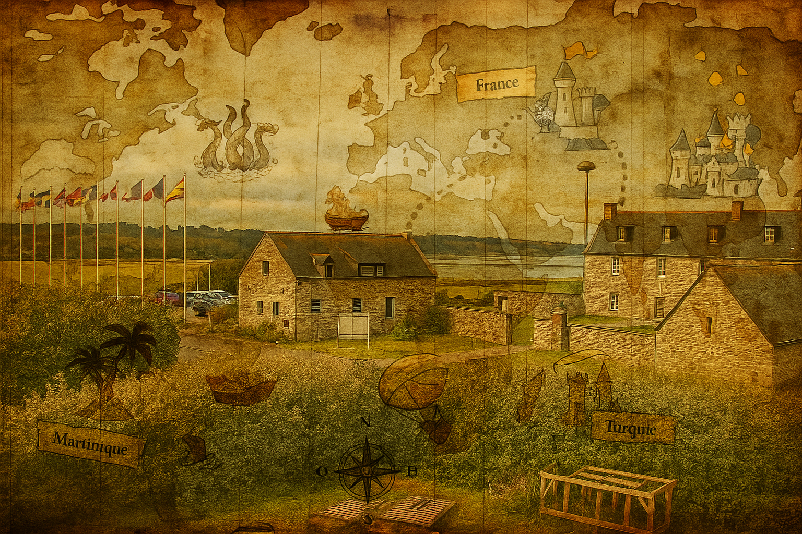

Jeu Pascal 2025

Bonjour et bienvenue à l’édition 2025 du Jeu Pascal
!
Après une année olympique, cette édition s’annonce historique : Dianou atteindra enfin la majorité… et peut-être ne sera-t-elle plus éligible au Jeu Pascal ? À suivre !
Cette année, le lieu change : fini le château ! Nous voilà tout près du manoir Saint-Michel, aux côtés de la mère Michelle…
Après une année olympique, cette édition s’annonce historique : Dianou atteindra enfin la majorité… et peut-être ne sera-t-elle plus éligible au Jeu Pascal ? À suivre !
Cette année, le lieu change : fini le château ! Nous voilà tout près du manoir Saint-Michel, aux côtés de la mère Michelle…